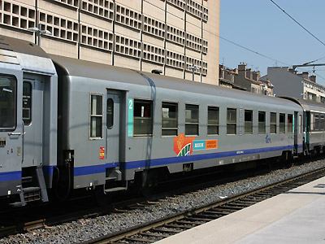
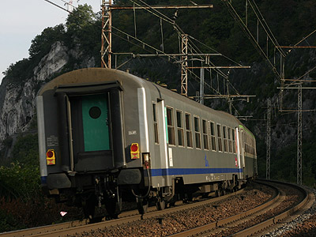

DEV USI
Voitures Express à couloir central
Voitures pour trains Express nationaux, légères et de conception simple, les DEV USI ont été en service commercial de 1963 à 2008. Elles se démarquaient par un aménagement "Coach", c'est à dire de grandes salles parcourues par un couloir central, qui, bien que courant pour le matériel omnibus, était encore rare pour le matériel Express.
Diagrammes d'origine :
B10t (les USI U60 à U63 ont été mises en service sous l'ancienne dénomination Bmyfi),
A4t4 (de même, ancienne dénomination : A6myfi),
Diagrammes suite au déclassement de voitures de première classe :
B4t4,
B4t5½,
A2t2B2t3
Diagrammes apparus par transformation :
B10tx (un seul exemplaire surnommé "Cyclope"),
A9t modernisée TER Centre,
St pour les voitures versées au parc de service.
Génèse
La SNCF cherchait depuis longtemps à construire et exploiter des voitures voyageurs à couloir central (Coach) sur des relations à moyennes et longues distances. L'intérêt était multiple puisque, sans cloisons, ces voitures seraient plus légères et moins chères à construire, plus faciles à aménager et à nettoyer avec des fauteuils dans le même sens. Il était possible, à pas de siège égal, d'installer des fauteuils plus confortables et les déplacements des voyageurs seraient plus aisés. Ce dernier argument étant important sur les Express à arrêts fréquents. Cependant, la clientèle préférait les compartiments isolés, et il fallait démontrer l'intérêt de l'aménagement coach. Après la mise en service de DEV Inox coach sur la relation Paris-Lille et une expérimentation sur 30 voitures fauteuils d'origine PLM en 1955, la SNCF décida de lancer pour la première fois un grand programme de voitures à couloir central pour la dotation des Express nationaux.
Elles étaient étudiées par la Division des Etudes Voitures et appelées "Unifiées du Service Intérieur" par opposition aux voitures UIC contemporaines et à vocation internationale. C'est pourquoi on les nomme "DEV USI", ou plus simplement "USI", voire même "DEV ANF", du nom de leur constructeur : les Ateliers du Nord de la France, basés dans l'usine de Crespin Blanc-Misseron près de Valenciennes, et aujourd'hui absorbés par le Canadien Bombardier.
1962 à 1974 : la construction
Deux premières commandes de 50 puis 70 voitures de type B10t furent
lancées en 1960 et 1961. Les DEV USI 60 et 61 présentent un chaudron qui
leur est spécifique : une grande salle unique à couloir central de 80
places et 10 baies régulièrement réparties sur chaque face. Les toilettes
prennent place dans les extrémités renforcées du chaudron, ces zones pouvant
être déformées en cas d'accident. Les voitures reposent sur des bogies
Pennsylvania de type Y 16 Is limités à 140 km/h. Le chauffage, alimenté à l'origine
par un réchauffeur à pétrole sans paraffine Avialex, fut remplacé par un chauffage
électrique à mesure que l'usage du câblot 1500v se généralisait dans les années 1970.
L'éclairage est alimenté par statodyne.
Elles furent mises en service de 1962 à 1964. Les USI 60 avaient une longueur
de caisse de 24,036 m, l'intercirculation se faisait par soufflets. Ceux-ci
disparaissent lors des révisions et sont remplacés par des bourrelets
UIC montés sur des caissons métalliques rapportés en bout de caisse à
l'instar des DEV AO et Inox courtes. Sur les USI 61, l'extrémité des caisses
est allongée au-delà des portes d'intercirculation pour remplacer les
soufflets par des bourrelets dès la construction. La caisse est
alongée à 24,734 m. La longueur hors-tampons et l'entraxe
des bogies demeurent inchangés.
Dès le programme 1962, le chaudron fut sensiblement modifié et unifié pour toutes les voitures produites par la suite. Il se base sur une répartition mixte avec quatre compartiments au centre de la voiture flanqués de deux salles à couloir central. Cette disposition, qui a permis de créer une voiture de 1ère classe A4t4, avait été dictée par la réticence des clients de 1ère classe vis à vis de la formule coach, notamment à cause des courants d'air provoqués par plusieurs baies ouvertes. Les voitures de seconde classe restaient aménagées en B10t, mais la répartition des baies est la même que sur les A4t4 : les quatre baies centrales sont plus écartées. Ces voitures sont montées sur bogies Y 24 C et sont limitées à 140 km/h.
A partir du programme 66, le chauffage est désormais électrique et alimenté par câblot 1500 V. Les voitures sont équipées de bogies Y 28 D aptes à 150 km/h. L'ajout de la commande de frein électro-pneumatique, montée d'origine à partir des voitures commandées en 1969, fit passer cette limite à 160 km/h. Les portes d'intercirculation sont à battant unique et hublot, puis à doubles portes semblables aux UIC, sur les derniers programmes.
Au total, la famille des USI a compté 803 voitures mises en service de 1962 à 1974. Bien que dédiées au Service Intérieur, un lot de voitures fut équipé pour rouler vers le Bénélux et a reçu une canalisation d'énergie apte au 3kV continu Belge.
Les ANF ont étudié une version évoluée des USI, plus longue et dotée de portes louvoyantes. Aucune voiture USI ne fut construite selon ce modèle mais les remorques des RTG en étaient directement issues. Enfin, un prototype de voiture "Unifiée Longue" a permis de définir les futures Corail "VTU" à couloir central.
1972 : Cyclope
En 1972, une rame expérimentale est formée pour circuler en réversibilité à 160 km/h entre les gares en cul-de-sac de Paris-Austerlitz, Orléans et Tours. La rame est spécialement équipée de câblots de réversibilité, les BB 9533 et 9535, issues de la sous-série 9531-9535 dotées d'un double-rapport d'engrenages permettant des vitesses de 120 et 180 km/h, sont modifiées pour tirer-pousser cette rame unique. La voiture B10tx 20-77 834 est équipée d'une loge de conduite, l'intercirculation est supprimée et une lucarne qui sert de pare-brise au mécanicien donne le surnom de "Cyclope" à la voiture. L'expérience connait quelques déboires de fiabilité mais elle est prometteuse puisque le programme des VU 75 Corail comporte 10 voitures réversibles B6Dux à câblots, et un lot de BB 9200 est modifié pour prendre le relais du Cyclope en 1978.
Seconde partie de carrière : Déclassement et régionalisation
L'aptitude des voitures sur Y 28 à 160 km/h leur permet brièvement d'entrer dans la composition de trains Rapides. Mais l'apogée des USI est courte. Avec l'arrivée massive des Corail, de nombreuses A4t4 sont déclassées en 2nde classe dès la fin des années 1970. L'ensemble des voitures sur bogies Y 16 et Y 24 est passé au parc régional vers la moitié des années 1980 et les radiations débutent, poussées par la montée en puissance du TGV.
Dans les années qui suivent, les voitures sur Y 28 subissent le même sort, en passant inexorablement au TER.
Sur l'ensemble des voitures, de nouvelles portes d'accès reconnaissables par des fenêtres plus petites sont installées lors des révisions. En 1995, un lot de 69 USI et de 15 UIC est vendu à la SNCB qui les utilise en trafic régional sous l'appelation commune K4. Ces voitures furent ensuite louées aux NS en 1999. Plus exotique, certaines voitures ont été revendues à des pays Africains, dont le Sénégal, et ont été équipées de bogies à écartement métrique pour être exploitées sur la ligne Dakar-Bamako.
Alors que les voitures vertes étaient déjà promises à un destin funeste, la
région Centre décide en 1997 une rénovation lourde sur un lot de 15 voitures,
l'aménagement intérieur est entièrement refait, de nouveaux fauteuils
sont installés, et l'extérieur est repeint avec les couleurs TER gris
métallisé et bande Bleu Institution 239. Un large sigle TER est
pelliculé sur les faces. Les voitures de 1ère classe inaugurent une
formule inédite A9t entièrement coach. La région les met en service sur les relations
Paris-Austerlitz Orléans, et autour de Tours.
Les régions Rhône Alpes, PACA et Languedoc-Roussillon
ont suivi le pas avec une rénovation plus légère : même livrée extérieure sans le sigle
mais simple rhabillage des banquettes. Dans les autres régions où les
USI subsistaient, des logos TER ont été apposés sur la livrée verte.
En 2003, les ultimes voitures Grandes Lignes disparaissent. Et il ne reste
déjà que moins de la moitié des voitures aptes au 160 km/h en service commercial.
La livraison massive des AGC éradique les USI du parc SNCF, y compris les voitures Centre pourtant encore
très confortables.
Quelques voitures subsistent dans le parc de Chemins de
Fer touristiques : Le CFTLP de Limoges, l'APMFS à Ambérieu, Loco Vapeur
141R 1199 à Nantes, Train Touristique du Centre Var. Plusieurs de ces
voitures sont montées sur bogies Y 28 et repeintes dans une livrée vert
celtique qu'elles n'avaient sans doute jamais portée. Le CFTLP possède au moins deux
USI 60 à caisse courte montées sur Y 16 Is.
Quelques données techniques
Constructeur : ANF-Crespin Blanc-Misseron
Vitesse maximum autorisée : 140/160 km/h
Alimentation du chauffage: Réchauffeur au PSP sur les U60 à U65, puis électrique sur toute la série (1500V cc, 1500V 50 Hz, également 3000V
cc, 1000V 16,7 Hz pour les voitures Bénélux)
Alimentation des auxiliaires sur batteries, recharge par statodyne.
Longueur: 25,094 m
Masse: 41 à 43t
Pour plus d'info :
Les fiches USI et K4 SNCB
sur Wikipedia.
Les USI et K4 sur Trains-Europe.
Une des Bmyfi USI 60 restaurée par le CFTLP. Guéret (24/06/2012)
Voiture de cantonnement ex-B10t sur Y 24 C, Roanne (21/01/2004)
Une B10t à vantaux simples montée sur bogies Y 28 D. Rennes (02/11/2002)

Ancienne A4t4 déclassée, cette B4t5½ est en maintenance
(Villeneuve Prairie, 07/09/2003)
Nom de type à rallonge pour cette A2t2B2t3 à Tours (26/12/2003)
Intérieur d'une B10t
A9t modernisée TER Centre à Tours (22/12/2003)
B10t modernisée TER Centre à Tours (26/12/2003)
Autre B10t modernisée TER Centre à Tours (11/05/2002)

B10t modernisée TER Languedoc Roussillon à Marseille St Charles (17/07/2005)
A2t2B2t3 modernisée TER Rhône Alpes à Bourg St Maurice (22/01/2006)

Une autre USI mixte TER Rhône Alpes à Voglans (22/10/2006)